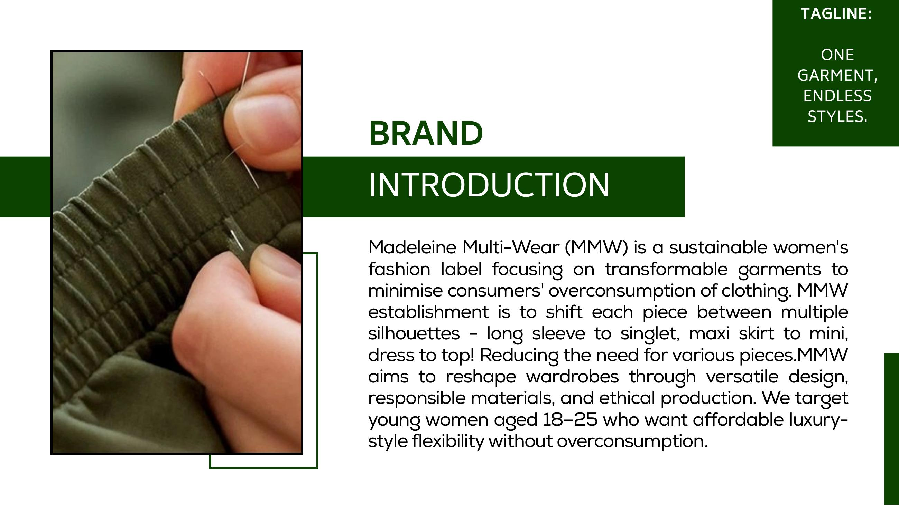
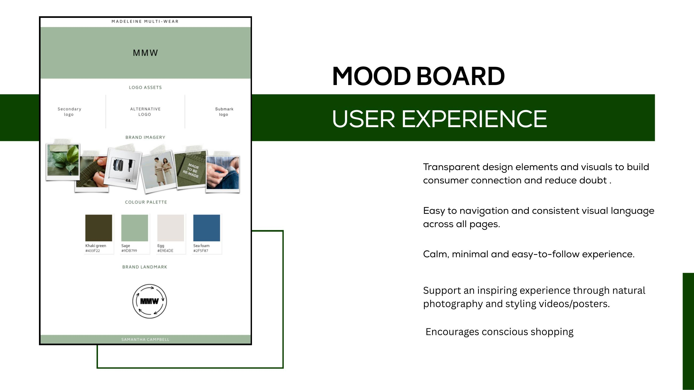
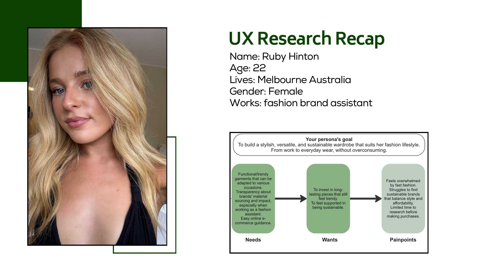
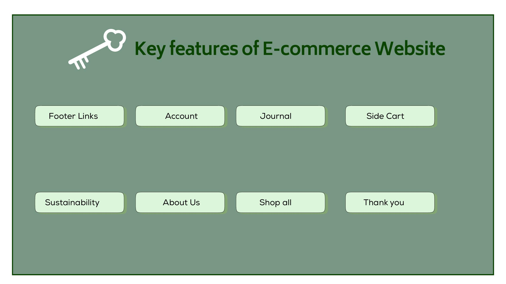
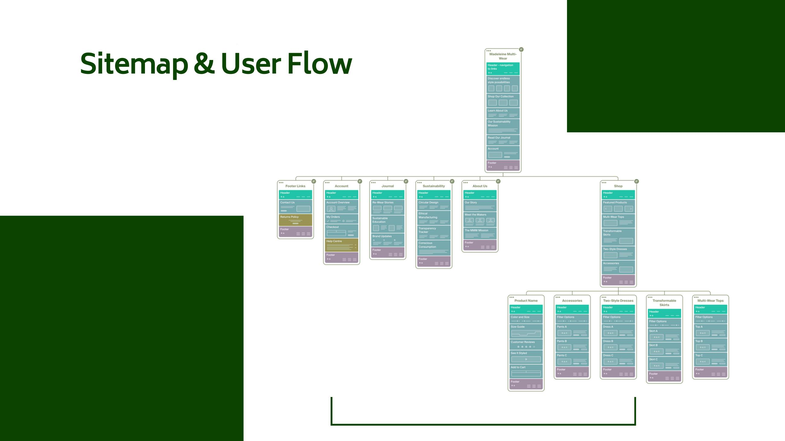
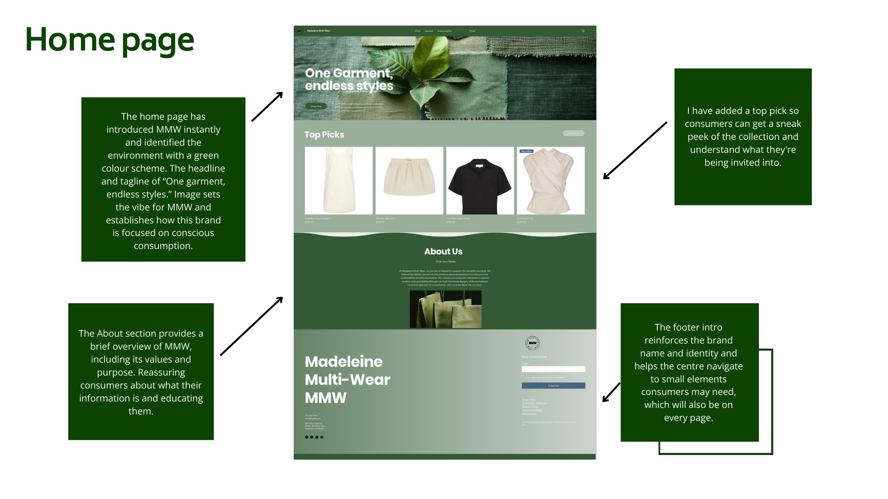

Brief
Translate the Madeleine Multi-Wear brand into a hybrid digital showroom that feels like the in-store experience.
The site had to do two jobs at once: sell the multi-wear product in a credible, editorial way, and act as the brand's education layer, garment care, repair credits, the case for circular fashion. Not a brochure, not a wall of pop-ups, not "10% OFF YOUR FIRST ORDER" greeting the user at the door.
Approach
I built around Ruby Hinton, 22, Melbourne, fashion brand assistant, a primary persona drawn from MMW's actual target. The whole experience laddered up to five UX principles: transparent design elements to build trust, consistent visual language across pages, a calm minimal aesthetic, inspiring natural photography and styling content, and a structure that nudges toward conscious shopping rather than impulse buying.
Sitemap follows a tight loop: a hero homepage that introduces "One garment, endless styles" up front, an About section that reinforces values, a clean shop with a side cart, a journal layer for the education content, and a footer that re-anchors the brand on every page. The colour scheme leans into a green-led conscious palette to set the tone immediately, no greenwashed cliché, just a quiet signal of where the brand stands.






A calm, transparent experience that lets the product, not the marketing copy, make the case for buying less.
Outcome
A full e-commerce concept covering home, about, journal, shop, account, and a side cart, wireframed against a real persona and a real brand position.
The output was a sitemap and user flow with rationale on every screen, why the home page leads with a top pick, how the About section reassures around data and intent, where the brand's environmental footprint lives in the journey. The framework now anchors the rest of MMW's product work and is the basis for the next round of high-fidelity design.